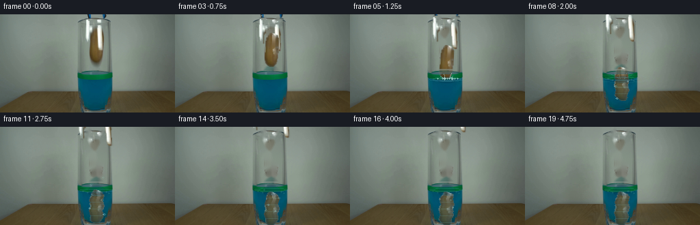
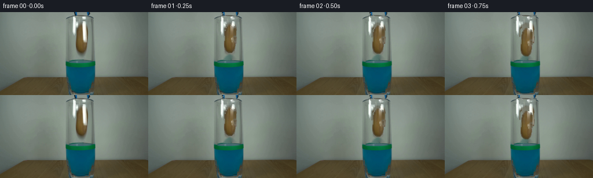
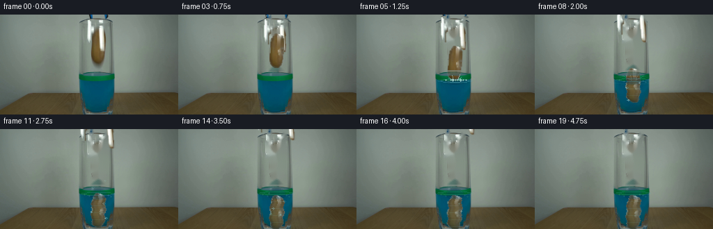
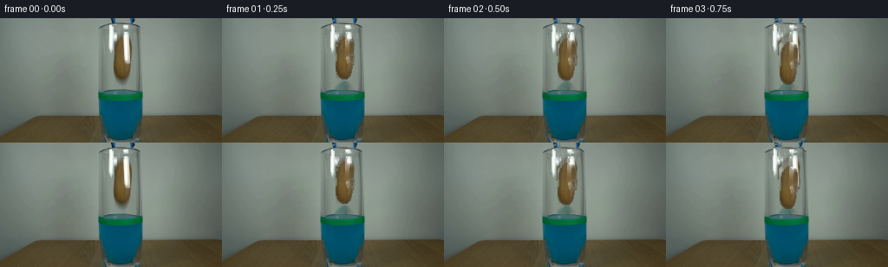

CODING AGENTS AS PIXEL WORLD MODELS
traex/DeepSeek-V4.1-Flash · 0143
点击播放 · 原生 RGB 像素
逐轮保存的候选
回放视频、检查图与代码变化。
每份候选均可单独播放。实际图片检查记录在下方工具轨迹中。
候选 01播放与检查图
点击播放 · 原生 RGB 像素


展开代码变化
--- 上一保存版本
+++ 本次保存版本
@@ -0,0 +1,377 @@
+from pathlib import Path
+
+import cv2
+import numpy as np
+from PIL import Image
+
+import artifact_io
+
+
+ROOT = Path(__file__).resolve().parent
+W, H = 256, 144
+N = 20
+
+
+def _alpha_blur(mask, sigma=0.65):
+ mask = mask.astype(np.float32)
+ if sigma:
+ mask = cv2.GaussianBlur(mask, (0, 0), sigma)
+ return np.clip(mask, 0.0, 1.0)
+
+
+def _over(dst, color, alpha):
+ a = np.asarray(alpha, dtype=np.float32)
+ if a.ndim == 2:
+ a = a[:, :, None]
+ src = np.asarray(color, dtype=np.float32)
+ if src.ndim == 1:
+ src = src.reshape(1, 1, 3)
+ return dst * (1.0 - a) + src * a
+
+
+def _ellipse_mask(cx, cy, rx, ry):
+ yy, xx = np.mgrid[:H, :W]
+ return (((xx - cx) / rx) ** 2 + ((yy - cy) / ry) ** 2 <= 1.0).astype(np.uint8)
+
+
+def _make_masks(image):
+ r = image[:, :, 0].astype(np.int16)
+ g = image[:, :, 1].astype(np.int16)
+ b = image[:, :, 2].astype(np.int16)
+
+ warm = (
+ (r > g + 4)
+ & (g > b + 7)
+ & (r > 38)
+ & (np.indices((H, W))[0] >= 18)
+ & (np.indices((H, W))[0] <= 73)
+ & (np.indices((H, W))[1] >= 128)
+ & (np.indices((H, W))[1] <= 153)
+ ).astype(np.uint8)
+ warm = cv2.morphologyEx(warm, cv2.MORPH_CLOSE, np.ones((3, 3), np.uint8))
+
+ count, labels, stats, _ = cv2.connectedComponentsWithStats(warm, 8)
+ candidates = [
+ i for i in range(1, count)
+ if stats[i, cv2.CC_STAT_AREA] > 80 and stats[i, cv2.CC_STAT_TOP] < 75
+ ]
+ potato_raw = np.zeros((H, W), np.uint8)
+ if candidates:
+ chosen = max(candidates, key=lambda i: stats[i, cv2.CC_STAT_AREA])
+ potato_raw[labels == chosen] = 1
+
+ points = cv2.findNonZero(potato_raw)
+ potato_hull = np.zeros((H, W), np.uint8)
+ if points is not None:
+ hull = cv2.convexHull(points)
+ cv2.fillConvexPoly(potato_hull, hull, 1)
+ # The source silhouette tapers naturally at both ends.
+ potato_hull = cv2.morphologyEx(
+ potato_hull, cv2.MORPH_CLOSE, np.ones((3, 3), np.uint8)
+ )
+
+ left_poly = np.array(
+ [[127, 0], [133, 0], [131, 8], [131, 19], [134, 22],
+ [133, 42], [126, 42], [125, 22], [126, 8]], np.int32
+ )
+ right_poly = np.array(
+ [[149, 0], [154, 0], [154, 7], [149, 12], [148, 18],
+ [151, 22], [151, 53], [143, 53], [142, 22], [143, 12],
+ [149, 7]], np.int32
+ )
+ left_region = np.zeros((H, W), np.uint8)
+ right_region = np.zeros((H, W), np.uint8)
+ cv2.fillPoly(left_region, [left_poly], 1)
+ cv2.fillPoly(right_region, [right_poly], 1)
+
+ metal_color = (
+ ((np.maximum.reduce([r, g, b]) > 102) & (np.maximum.reduce([r, g, b]) - np.minimum.reduce([r, g, b]) < 52))
+ | ((b > r + 9) & (b > g + 2) & (b > 52))
+ )
+ left_metal = (left_region & metal_color.astype(np.uint8)).astype(np.uint8)
+ right_metal = (right_region & metal_color.astype(np.uint8)).astype(np.uint8)
+ left_metal = cv2.morphologyEx(left_metal, cv2.MORPH_CLOSE, np.ones((2, 2), np.uint8))
+ right_metal = cv2.morphologyEx(right_metal, cv2.MORPH_CLOSE, np.ones((2, 2), np.uint8))
+
+ clean_mask = (
+ potato_hull
+ | cv2.dilate(left_region, np.ones((3, 3), np.uint8))
+ | cv2.dilate(right_region, np.ones((3, 3), np.uint8))
+ )
+ # Remove the soft contact shadow under the released object as well.
+ clean_mask[68:82, 129:154] = 1
+ return potato_raw, potato_hull, left_metal, right_metal, clean_mask
+
+
+def _make_sprites(image, potato_hull, left_mask, right_mask):
+ # Reconstruct the small portions of the potato hidden by the gripper.
+ holes = potato_hull.astype(np.uint8) & (1 - _warm_pixels(image))
+ holes = cv2.dilate(holes, np.ones((2, 2), np.uint8))
+ filled = cv2.inpaint(image, holes, 2, cv2.INPAINT_TELEA)
+
+ potato = filled.astype(np.float32)
+ potato_alpha = _alpha_blur(potato_hull, 0.45)
+ # Slightly suppress the bright source background at the silhouette edge.
+ potato_alpha *= np.clip((potato.max(axis=2) - 38.0) / 40.0, 0.0, 1.0)
+ potato_alpha *= potato_hull
+
+ left = image.astype(np.float32)
+ right = image.astype(np.float32)
+ left_alpha = _alpha_blur(left_mask, 0.55)
+ right_alpha = _alpha_blur(right_mask, 0.55)
+ return potato, potato_alpha, left, left_alpha, right, right_alpha
+
+
+def _warm_pixels(image):
+ r = image[:, :, 0].astype(np.int16)
+ g = image[:, :, 1].astype(np.int16)
+ b = image[:, :, 2].astype(np.int16)
+ return ((r > g + 4) & (g > b + 7) & (r > 38)).astype(np.uint8)
+
+
+def _warp_layer(color, alpha, center, dx=0.0, dy=0.0, angle=0.0, scale=1.0):
+ matrix = cv2.getRotationMatrix2D(center, angle, scale)
+ matrix[0, 2] += dx
+ matrix[1, 2] += dy
+ warped_color = cv2.warpAffine(
+ color, matrix, (W, H), flags=cv2.INTER_LINEAR,
+ borderMode=cv2.BORDER_CONSTANT, borderValue=(0, 0, 0)
+ )
+ warped_alpha = cv2.warpAffine(
+ alpha, matrix, (W, H), flags=cv2.INTER_LINEAR,
+ borderMode=cv2.BORDER_CONSTANT, borderValue=0
+ )
+ return warped_color, np.clip(warped_alpha, 0.0, 1.0)
+
+
+def _draw_disc(canvas, x, y, radius, color, alpha):
+ layer = np.zeros_like(canvas)
+ cv2.circle(layer, (int(round(x)), int(round(y))), max(1, int(radius)), color, -1, cv2.LINE_AA)
+ mask = (layer.max(axis=2) > 0).astype(np.float32) * alpha
+ mask = _alpha_blur(mask, 0.45)
+ return _over(canvas, layer, mask)
+
+
+def _draw_ring(canvas, x, y, rx, ry, color, alpha, thickness=1):
+ layer = np.zeros_like(canvas)
+ cv2.ellipse(
+ layer,
+ (int(round(x)), int(round(y))),
+ (max(1, int(round(rx))), max(1, int(round(ry)))),
+ 0, 0, 360, color, thickness, cv2.LINE_AA
+ )
+ mask = (layer.max(axis=2) > 0).astype(np.float32) * alpha
+ mask = _alpha_blur(mask, 0.38)
+ return _over(canvas, layer, mask)
+
+
+def _water_effects(canvas, frame):
+ # The water rises modestly as the potato displaces liquid.
+ entry = np.clip((frame - 4) / 9.0, 0.0, 1.0)
+ waterline = 95.0 - 3.0 * entry
+ time = max(0.0, frame - 4.0)
+
+ if frame >= 4:
+ # Meniscus and a dark, displaced surface immediately below the entry point.
+ if frame >= 5:
+ depth = min(7.0, 1.8 + 0.9 * time)
+ cv2_layer = np.zeros_like(canvas)
+ cv2.ellipse(
+ cv2_layer, (141, int(round(waterline + 1))), (12, int(round(depth))),
+ 0, 0, 360, (3, 54, 78), -1, cv2.LINE_AA
+ )
+ mask = (cv2_layer.max(axis=2) > 0).astype(np.float32) * 0.34
+ mask = _alpha_blur(mask, 1.0)
+ canvas = _over(canvas, cv2_layer, mask)
+
+ canvas = _draw_ring(canvas, 141, waterline, 25, 2.0, (87, 181, 194), 0.22, 1)
+
+ if frame >= 5:
+ # Expanding elliptical ripples travel toward the glass walls.
+ for k in range(3):
+ age = time - k * 0.72
+ if -0.1 <= age <= 3.3:
+ radius = 8.0 + 12.0 * max(0.0, age)
+ alpha = 0.34 * np.exp(-0.8 * max(0.0, age))
+ canvas = _draw_ring(
+ canvas, 141, waterline + 0.7, radius, 1.4 + radius * 0.09,
+ (135, 225, 226), alpha, 1
+ )
+
+ if 4 <= frame <= 9:
+ # Crown sheets and a compact burst of droplets at impact.
+ age = max(0.0, frame - 5.0)
+ fade = max(0.0, 1.0 - age / 4.5)
+ splash_layer = np.zeros_like(canvas)
+ left_x = int(round(132 - 2.1 * age))
+ right_x = int(round(150 + 2.1 * age))
+ left_y = int(round(91 - 7.5 * age + 2.2 * age * age))
+ right_y = int(round(90 - 8.0 * age + 2.4 * age * age))
+ cv2.line(splash_layer, (138, 94), (left_x, left_y), (170, 236, 239), 1, cv2.LINE_AA)
+ cv2.line(splash_layer, (145, 94), (right_x, right_y), (180, 241, 244), 1, cv2.LINE_AA)
+ cv2.line(splash_layer, (139, 94), (137, 87), (210, 248, 247), 1, cv2.LINE_AA)
+ cv2.line(splash_layer, (145, 94), (148, 86), (220, 250, 248), 1, cv2.LINE_AA)
+ mask = (splash_layer.max(axis=2) > 0).astype(np.float32) * (0.48 * fade)
+ canvas = _over(canvas, splash_layer, _alpha_blur(mask, 0.42))
+
+ drops = [
+ (135.0, -22.0, 1), (138.0, -28.0, 2), (145.0, -30.0, 1),
+ (149.0, -24.0, 2), (153.0, -17.0, 1), (128.0, -15.0, 1),
+ (157.0, -13.0, 1), (142.0, -34.0, 1),
+ ]
+ for i, (x0, vy, radius) in enumerate(drops):
+ x = x0 + (i - 3) * 0.42 * age
+ y = 94.0 + vy * age + 12.5 * age * age
+ if y <= 100:
+ canvas = _draw_disc(canvas, x, y, radius, (210, 248, 249), 0.62 * fade)
+
+ # Bubbles form around the descending potato and drift upward.
+ bubble_specs = [
+ (6, 132.0, 119.0, 1.2, 7.0), (6, 150.0, 114.0, 1.0, 8.0),
+ (7, 135.0, 131.0, 1.1, 8.0), (8, 148.0, 128.0, 1.4, 7.0),
+ (9, 130.0, 137.0, 1.0, 9.0), (10, 151.0, 136.0, 1.2, 8.0),
+ (11, 136.0, 138.0, 1.1, 8.0), (12, 147.0, 139.0, 1.0, 8.0),
+ (13, 132.0, 130.0, 0.9, 8.0), (14, 150.0, 134.0, 1.0, 8.0),
+ ]
+ for start, x0, y0, radius, speed in bubble_specs:
+ age = frame - start
+ if 0 <= age <= 6:
+ x = x0 + 0.8 * np.sin(age * 1.7 + x0)
+ y = y0 - speed * age
+ fade = min(1.0, age / 0.8) * max(0.0, 1.0 - age / 6.5)
+ canvas = _draw_ring(
+ canvas, x, y, radius + 0.45, radius * 0.8 + 0.4,
+ (124, 219, 226), 0.52 * fade, 1
+ )
+ if radius >= 1.0:
+ canvas = _draw_disc(canvas, x - 0.3, y - 0.3, 0.45, (225, 250, 249), 0.32 * fade)
+
+ # A few persistent surface sparkles keep the liquid alive after settling.
+ if frame >= 8:
+ sparkle = 0.10 + 0.03 * np.sin(frame * 1.8)
+ for x, y in ((121, 94), (128, 96), (155, 95), (159, 97)):
+ canvas = _draw_disc(canvas, x, y, 0.45, (173, 235, 236), sparkle)
+ return canvas, waterline
+
+
+def _paste_potato(base, color, alpha, frame, waterline):
+ if frame >= 5:
+ # Row-level refraction makes the submerged edge shimmer without moving its anchor.
+ color = color.copy()
+ alpha = alpha.copy()
+ for y in range(max(0, int(waterline)), H):
+ shift = int(round(0.75 * np.sin(y * 0.42 + frame * 1.45)))
+ if shift:
+ color[y] = np.roll(color[y], shift, axis=0)
+ alpha[y] = np.roll(alpha[y], shift, axis=0)
+
+ canvas = _over(base, color, alpha)
+ if frame >= 5:
+ yy = np.mgrid[:H, :W][0].astype(np.float32)
+ depth = np.clip((yy - waterline) / max(8.0, H - waterline), 0.0, 1.0)
+ tint_alpha = alpha * (yy >= waterline) * (0.16 + 0.20 * depth)
+ canvas = _over(canvas, np.array([4, 73, 103], np.float32), tint_alpha)
+
+ # Faint cyan caustics pass across the potato as it settles.
+ caustic = (
+ (np.sin((yy + frame * 2.0) * 0.63) > 0.86)
+ & (yy > waterline)
+ ).astype(np.float32) * alpha * 0.12
+ canvas = _over(canvas, np.array([133, 220, 222], np.float32), caustic)
+ return canvas
+
+
+def generate():
+ source = np.asarray(Image.open(ROOT / "first_frame.png").convert("RGB"), dtype=np.uint8)
+ if source.shape != (H, W, 3):
+ raise ValueError(f"Unexpected first frame shape: {source.shape}")
+
+ potato_raw, potato_hull, left_mask, right_mask, clean_mask = _make_masks(source)
+ del potato_raw
+ clean = cv2.inpaint(source, clean_mask, 3, cv2.INPAINT_TELEA)
+ potato, potato_alpha, left_color, left_alpha, right_color, right_alpha = _make_sprites(
+ source, potato_hull, left_mask, right_mask
+ )
+
+ # The release begins gently, then the potato accelerates under gravity.
+ offsets = np.array(
+ [0, 0, 1.5, 6, 13.5, 24, 36, 47, 56, 63, 68, 71, 73, 74, 74, 73.5, 74, 73.6, 74, 73.8],
+ dtype=np.float32,
+ )
+ angles = np.array(
+ [0, 0, -0.3, -0.8, -1.5, -2.0, 1.0, 2.8, 3.8, 3.2, 2.2, 1.5, 1.0,
+ 0.6, 0.3, 0.5, 0.2, 0.4, 0.2, 0.3],
+ dtype=np.float32,
+ )
+ open_left = np.array([0, -1, -2, -3, -4, -5, -6, -7, -8, -9, -10, -11, -12,
+ -13, -14, -15, -16, -17, -18, -19], dtype=np.float32)
+ open_right = -open_left
+ lift = np.array([0, 0, 0, 1, 2, 4, 7, 11, 15, 19, 23, 27, 31,
+ 35, 39, 43, 47, 51, 55, 59], dtype=np.float32)
+
+ glass_left = np.zeros((H, W), np.float32)
+ glass_right = np.zeros((H, W), np.float32)
+ glass_left[80:144, 111:122] = 1.0
+ glass_right[80:144, 157:166] = 1.0
+ glass_front = source.astype(np.float32)
+
+ frames = []
+ for frame in range(N):
+ if frame == 0:
+ frames.append(source.copy())
+ continue
+
+ canvas = clean.astype(np.float32)
+
+ # Move the gripper jaws apart and retract them out of the fixed shot.
+ lift_amount = float(lift[frame])
+ left_color_w, left_alpha_w = _warp_layer(
+ left_color, left_alpha, (129.5, 20), float(open_left[frame]),
+ -lift_amount, angle=float(-open_left[frame]) * 0.25
+ )
+ right_color_w, right_alpha_w = _warp_layer(
+ right_color, right_alpha, (147.0, 24), float(open_right[frame]),
+ -lift_amount, angle=float(open_right[frame]) * 0.25
+ )
+ canvas = _over(canvas, left_color_w, left_alpha_w)
+ canvas = _over(canvas, right_color_w, right_alpha_w)
+
+ # The potato remains in the jaws until the second released frame.
+ pdx = 0.35 * np.sin(frame * 1.1) * (frame >= 10)
+ potato_color_w, potato_alpha_w = _warp_layer(
+ potato, potato_alpha, (141.0, 46.0), float(pdx),
+ float(offsets[frame]), angle=float(angles[frame])
+ )
+
+ # Composite the potato under the front glass; the tint is applied in _paste_potato.
+ pre_waterline = 95.0
+ canvas = _paste_potato(canvas, potato_color_w, potato_alpha_w, frame, pre_waterline)
+
+ # Restore the glass walls and rim in front of the submerged potato.
+ if frame >= 4:
+ canvas = _over(canvas, glass_front, glass_left * 0.76)
+ canvas = _over(canvas, glass_front, glass_right * 0.76)
+ rim = np.zeros((H, W), np.float32)
+ rim[80:88, 108:168] = 0.62
+ canvas = _over(canvas, glass_front, rim)
+
+ canvas, waterline = _water_effects(canvas, frame)
+
+ # Preserve a fine sensor-grain character in newly revealed background.
+ if frame <= 3:
+ reveal = _alpha_blur(
+ cv2.dilate(clean_mask, np.ones((7, 7), np.uint8)), 1.8
+ ) * (0.12 + frame * 0.05)
+ grain = np.random.default_rng(1400 + frame).normal(0, 1.15, (H, W, 1))
+ canvas = canvas + grain * reveal[:, :, None]
+
+ frames.append(np.clip(canvas + 0.5, 0, 255).astype(np.uint8))
+
+ frames = np.stack(frames, axis=0)
+ assert frames.shape == (N, H, W, 3) and frames.dtype == np.uint8
+ assert np.array_equal(frames[0], source)
+ artifact_io.save(frames, ROOT)
+
+
+if __name__ == "__main__":
+ generate()
候选 02播放与检查图
点击播放 · 原生 RGB 像素


展开代码变化
--- 上一保存版本
+++ 本次保存版本
@@ -94,9 +94,9 @@
right_metal = cv2.morphologyEx(right_metal, cv2.MORPH_CLOSE, np.ones((2, 2), np.uint8))
clean_mask = (
- potato_hull
- | cv2.dilate(left_region, np.ones((3, 3), np.uint8))
- | cv2.dilate(right_region, np.ones((3, 3), np.uint8))
+ cv2.dilate(potato_hull, np.ones((2, 2), np.uint8))
+ | cv2.dilate(left_metal, np.ones((2, 2), np.uint8))
+ | cv2.dilate(right_metal, np.ones((2, 2), np.uint8))
)
# Remove the soft contact shadow under the released object as well.
clean_mask[68:82, 129:154] = 1
@@ -269,14 +269,14 @@
if frame >= 5:
yy = np.mgrid[:H, :W][0].astype(np.float32)
depth = np.clip((yy - waterline) / max(8.0, H - waterline), 0.0, 1.0)
- tint_alpha = alpha * (yy >= waterline) * (0.16 + 0.20 * depth)
+ tint_alpha = alpha * (yy >= waterline) * (0.08 + 0.13 * depth)
canvas = _over(canvas, np.array([4, 73, 103], np.float32), tint_alpha)
# Faint cyan caustics pass across the potato as it settles.
caustic = (
(np.sin((yy + frame * 2.0) * 0.63) > 0.86)
& (yy > waterline)
- ).astype(np.float32) * alpha * 0.12
+ ).astype(np.float32) * alpha * 0.07
canvas = _over(canvas, np.array([133, 220, 222], np.float32), caustic)
return canvas
可观测工具轨迹
实际执行的命令与返回图片。
命令 1exit 0
/bin/bash -c "pwd && rg --files -g '"'!*.mp4'"' -g '"'!*.mov'"' | sort"
命令 2exit 0
/bin/bash -c "sed -n '1,240p' GENERATION_RULES.md"
命令 3exit 0
/bin/bash -c "sed -n '1,240p' prompt.txt"
命令 4exit 0
/bin/bash -c 'file first_frame.png && identify first_frame.png 2>/dev/null || true && ffmpeg -version | head -3'
命令 5exit 0
/bin/bash -c "sed -n '1,260p' artifact_io.py"
命令 6exit 0
/bin/bash -c "sed -n '1,260p' player_template.html"
命令 7exit 0
/bin/bash -c "python - <<'PY'
from PIL import Image
import numpy as np
im=Image.open('first_frame.png').convert('RGB')
a=np.array(im)
print(im.size, a.shape, a.dtype)
print('mean',a.mean((0,1)), 'min',a.min((0,1)), 'max',a.max((0,1)))
# dominant exact colors
u,c=np.unique(a.reshape(-1,3),axis=0,return_counts=True)
for i in np.argsort(c)[-30:][::-1]: print(tuple(u[i]), int(c[i]))
PY"命令 8exit 0
/bin/bash -c "python - <<'PY' mods=['numpy','PIL','cv2','scipy','skimage','imageio','matplotlib'] for m in mods: try: x=__import__(m); print(m, getattr(x,'__version__','ok')) except Exception as e: print(m,'MISSING',e) PY"
命令 9exit 0
/bin/bash -c "python - <<'PY'
from PIL import Image
import numpy as np
im=np.asarray(Image.open('first_frame.png').convert('RGB'))
# 64x36 ascii: luminance levels, with hue labels for strongly colored pixels
for y in range(0,144,4):
line=''
for x in range(0,256,4):
b=im[y:y+4,x:x+4].reshape(-1,3).mean(0)
r,g,bl=b
mx=max(b); mn=min(b); sat=mx-mn
if bl>r*1.15 and bl>g*1.05: ch='B' if sat>18 else 'b'
elif g>r*1.15 and g>bl*1.08: ch='G' if sat>18 else 'g'
elif r>g*1.25 and r>bl*1.18: ch='R' if sat>20 else 'r'
elif r>g*1.05 and g>bl*1.12: ch='Y' if sat>15 else 'y'
elif bl>r*1.08 and bl>g*1.08: ch='P'
else:
v=b.mean(); ch=' .:-=+*#%@'[min(9,int(v/256*10))]
line+=ch
print(f'{y:03d} {line}')
PY"命令 10exit 0
/bin/bash -c "python - <<'PY'
from PIL import Image
import numpy as np
im=np.asarray(Image.open('first_frame.png').convert('RGB'))
for y in [0,4,8,12,16,20,24,28,32,36,40,44,48,52,56,60,64,68,72,76,80,84,88,92,96,100,104,108,112,116,120,124,128,132,136,140]:
print('\\ny',y)
for x in range(0,256,16):
b=im[y:y+4,x:x+16].reshape(-1,3).mean(0).astype(int)
print(f'{x:3}:{b[0]:3},{b[1]:3},{b[2]:3}',end=' ')
print()
PY"命令 11exit 0
/bin/bash -c "python - <<'PY'
from PIL import Image
import numpy as np, cv2
im=np.asarray(Image.open('first_frame.png').convert('RGB'))
hsv=cv2.cvtColor(im,cv2.COLOR_RGB2HSV)
# HSV summaries over crop x95:165 y0:144 by 4x4
for y in range(0,144,4):
line=''
for x in range(96,164,2):
b=im[y:y+4,x:x+2].reshape(-1,3).mean(0)
hh=hsv[y:y+4,x:x+2].reshape(-1,3).mean(0)
r,g,bl=b; mx=max(b); mn=min(b); sat=mx-mn
# specific semantic labels based on RGB
if r>70 and r>g*1.15 and r>bl*1.25: ch='R'
elif r>70 and g>50 and r>g*1.03 and g>bl*1.12: ch='Y'
elif g>r*1.2 and g>bl*1.02: ch='G'
elif bl>r*1.2 and bl>g*1.02: ch='B'
elif mx<55: ch='K'
elif sat<12:
ch='W' if mx>145 else ('w' if mx>115 else ('d' if mx>80 else 'k'))
elif r>g and g>bl: ch='y'
elif g>=r and g>=bl: ch='g'
elif bl>=r and bl>=g: ch='b'
else: ch='?'
line+=ch
print(f'{y:03d} {line}')
print('x labels:', ''.join(str((96+i*2)//10%10) for i in range(34)))
PY"命令 12exit 0
/bin/bash -c "python - <<'PY'
from PIL import Image
import numpy as np
im=np.asarray(Image.open('first_frame.png').convert('RGB'))
for y in range(0,112,2):
# detect object classes, print x ranges over x110:150
row=im[y]
r,g,b=row[:,0],row[:,1],row[:,2]
m=(np.maximum.reduce([r,g,b])-np.minimum.reduce([r,g,b])>15)&(np.maximum.reduce([r,g,b])>45)
ids=np.flatnonzero(m & (np.arange(256)>=105)&(np.arange(256)<160))
if len(ids): print(y, int(ids.min()), int(ids.max()), len(ids))
PY"命令 13exit 0
/bin/bash -c "python - <<'PY'
from PIL import Image
import numpy as np
im=np.asarray(Image.open('first_frame.png').convert('RGB'))
# 2x2 blocks detailed in x124:160 y0:112
for y in range(0,112,2):
line=''
for x in range(124,160,2):
b=im[y:y+2,x:x+2].reshape(-1,3).mean(0)
r,g,bl=b
mx=max(b); mn=min(b); sat=mx-mn
if mx<40: ch='K'
elif sat<8: ch=' ' if mx>150 else ('.' if mx>115 else (':' if mx>85 else 'k'))
elif r>g*1.22 and r>bl*1.35: ch='R'
elif r>g*1.03 and g>bl*1.15 and sat>25: ch='Y'
elif r>g*1.03 and g>bl*1.15: ch='y'
elif g>r*1.15 and g>bl*1.05: ch='G'
elif g>r*1.05 and g>bl*1.05: ch='g'
elif bl>r*1.15 and bl>g*1.03: ch='B'
elif bl>r*1.05 and bl>g*1.03: ch='b'
elif r>g and g>bl: ch='o'
else: ch='?'
line+=ch
print(f'{y:03d} {line}')
print(' '+''.join(str((124+i*2)//10%10) for i in range(18)))
print(' '+''.join(str((124+i*2)%10) for i in range(18)))
PY"命令 14exit 0
/bin/bash -c "python - <<'PY'
from PIL import Image
import numpy as np, cv2
im=np.asarray(Image.open('first_frame.png').convert('RGB'))
# print exact crop in HSV semantic
# segment kmeans in full image 16 colors
x=im.reshape(-1,3).astype(np.float32)
crit=(cv2.TERM_CRITERIA_EPS+cv2.TERM_CRITERIA_MAX_ITER,100,.1)
_,lab,cen=cv2.kmeans(x,18,None,crit,5,cv2.KMEANS_PP_CENTERS)
lab=lab.reshape(144,256)
for k in np.argsort(cen.mean(1)):
m=lab==k
ys,xs=np.where(m)
print(k, tuple(np.round(cen[k]).astype(int)), 'n',m.sum(),'bbox', (xs.min(),ys.min(),xs.max(),ys.max()))
PY"命令 15exit 0
/bin/bash -c "python - <<'PY'
from PIL import Image
import numpy as np
im=np.asarray(Image.open('first_frame.png').convert('RGB')).astype(float)
# sample columns x125..155 at rows and print rgb
for y in [6,10,14,18,22,26,30,34,38,42,46,50,54,58,62,66,70,74,78,82,86,90,94,98,102,106,110]:
print(f'y={y:3}', end=' ')
for x in range(125,155,3):
r,g,b=im[y,x].astype(int); print(f'{x}:{r:02x}{g:02x}{b:02x}',end=' ')
print()
PY"命令 16exit 0
/bin/bash -c "python - <<'PY'
from PIL import Image
import numpy as np, cv2
im=np.asarray(Image.open('first_frame.png').convert('RGB'))
hsv=cv2.cvtColor(im,cv2.COLOR_RGB2HSV)
# semantic maps crop x100:172,y0:112 2x2
for y in range(0,112,2):
line=''
for x in range(100,172,2):
b=im[y:y+2,x:x+2].reshape(-1,3).mean(0); r,g,bl=b
hh,ss,vv=hsv[y:y+2,x:x+2].reshape(-1,3).mean(0)
mx=max(b); mn=min(b); sat=mx-mn
# masks tuned
if r>75 and r>g*1.15 and r>bl*1.25: ch='R' # red potato
elif r>65 and g>45 and r>g*1.02 and g>bl*1.12: ch='Y' # ochre potato
elif r>g*1.02 and g>bl*1.08: ch='y'
elif g>r*1.18 and g>bl*1.02 and mx>50: ch='G' # vivid green
elif g>r*1.08 and g>bl*1.03: ch='g'
elif bl>r*1.25 and bl>g*1.06: ch='B' # blue liquid
elif bl>r*1.10 and bl>g*1.03: ch='b'
elif mx<35: ch='K'
elif sat<10: ch='W' if mx>220 else ('w' if mx>160 else ('o' if mx>115 else ('.' if mx>80 else ':')))
elif r>g and g>bl: ch='t'
else: ch='?'
line+=ch
print(f'{y:03d} {line}')
print(' '+''.join(str((100+i*2)//10%10) for i in range(36)))
print(' '+''.join(str((100+i*2)%10) for i in range(36)))
PY"命令 17exit 0
/bin/bash -c "python - <<'PY'
from PIL import Image
import numpy as np, cv2
im=np.asarray(Image.open('first_frame.png').convert('RGB'))
r,g,b=[im[:,:,i].astype(int) for i in range(3)]
roi=np.zeros((144,256),bool); roi[:112,100:180]=1
# potato-ish warm brown
m=((r>g+4)&(g>b+8)&(r>40)&roi)
# clean morphology and comps
m=(m.astype(np.uint8)*255)
n,lab,stats,cen=cv2.connectedComponentsWithStats(m,8)
for i in sorted(range(1,n), key=lambda i:stats[i,4],reverse=True)[:30]:
x,y,w,h,a=stats[i]
print(i,'bbox',x,y,w,h,'area',a,'center',cen[i])
# save mask preview
Image.fromarray(np.where(m[:,:,None]>0, im, 0).astype('uint8')).save('.tmp/potato_warm.png')
PY"命令 18exit 0
/bin/bash -c "python - <<'PY'
from PIL import Image
import numpy as np, cv2
im=np.asarray(Image.open('first_frame.png').convert('RGB'))
r,g,b=[im[:,:,i].astype(np.int16) for i in range(3)]
roi=np.zeros((144,256),np.uint8); roi[16:76,125:156]=1
m=((r>g+4)&(g>b+8)&(r>40)&(roi>0)).astype(np.uint8)
m=cv2.morphologyEx(m,cv2.MORPH_CLOSE,np.ones((3,3),np.uint8))
# fill contours
cnts,_=cv2.findContours(m,cv2.RETR_EXTERNAL,cv2.CHAIN_APPROX_SIMPLE)
filled=np.zeros_like(m)
for c in cnts:
if cv2.contourArea(c)>30: cv2.drawContours(filled,[c],-1,1,-1)
for y in range(16,76):
xs=np.flatnonzero(filled[y]);
if len(xs): print(y,xs.min(),xs.max(),len(xs))
Image.fromarray((filled*255)).save('.tmp/mask.png')
print('area',filled.sum())
PY"命令 19exit 0
/bin/bash -c "python - <<'PY'
from PIL import Image
import numpy as np
im=np.asarray(Image.open('first_frame.png').convert('RGB')).astype(float)
# per-row background estimate from x100:120 and x164:184 median, compare residual in x120:164
for y in range(0,84,2):
bg=np.median(np.concatenate([im[y,100:120],im[y,164:184]],axis=0),axis=0)
line=''
for x in range(120,164,1):
d=im[y,x]-bg
# Euclidean and warm/white/blue
r,g,b=im[y,x]
if r>g+8 and g>b+8: ch='R'
elif r>190 and g>190 and b>185: ch='W'
elif b>r+8 and b>g-3: ch='B'
elif abs(r-g)<9 and abs(g-b)<9 and r<80: ch='K'
elif np.linalg.norm(d)<10: ch=' '
elif np.linalg.norm(d)<20: ch='.'
elif np.linalg.norm(d)<35: ch=':'
elif np.linalg.norm(d)<60: ch='o'
else: ch='#'
line+=ch
print(f'{y:02d} {line}')
print(' '+''.join(str(x//10%10) for x in range(120,164)))
print(' '+''.join(str(x%10) for x in range(120,164)))
PY"命令 20exit 0
/bin/bash -c "python - <<'PY'
from PIL import Image
import numpy as np
im=np.asarray(Image.open('first_frame.png').convert('RGB')).astype(int)
# raw brightness matrix 120:165, 20:82 sampled 2x2 mean mapped chars
for y in range(18,84,2):
line=''
for x in range(120,166,2):
b=im[y:y+2,x:x+2].mean()
line+=' .:-=+*#%@'[min(9,int(b/256*10))]
print(f'{y:02d} {line}')
PY"命令 21exit 0
/bin/bash -c "python - <<'PY'
from PIL import Image
import numpy as np, cv2
im=np.asarray(Image.open('first_frame.png').convert('RGB'))
crop=im[0:84,118:166]
x=crop.reshape(-1,3).astype(np.float32)
crit=(cv2.TERM_CRITERIA_EPS+cv2.TERM_CRITERIA_MAX_ITER,100,.2)
_,lab,cen=cv2.kmeans(x,14,None,crit,10,cv2.KMEANS_PP_CENTERS)
lab=lab.reshape(84,48)
# assign chars by luminance and hue
chars='0123456789ABCDEFGHIJKLMNOPQRSTUVWXYZ'
order=np.argsort(cen.mean(1))
mp={int(k):chars[i] for i,k in enumerate(order)}
for y in range(0,84,2):
print(f'{y:02d} '+''.join(mp[int(lab[y,x])] for x in range(0,48,1)))
print('clusters')
for k in order:
print(mp[int(k)],tuple(np.round(cen[k]).astype(int)))
print('x '+''.join(str((118+i)//10%10) for i in range(48)))
print('x '+''.join(str((118+i)%10) for i in range(48)))
PY"命令 22exit 0
/bin/bash -c "python - <<'PY'
from PIL import Image
import numpy as np
im=np.asarray(Image.open('first_frame.png').convert('RGB'))
# print exact RGB along rows y0..100 at key x with run lengths of nearest color classes
for y in [0,2,4,6,8,10,12,14,16,18,20,22,24,30,40,50,60,70,72,74,76,78,80,82,84,86,88,90,92,94,96,98,100,104,108,112,116,120,124,128,132,136,140,143]:
vals=[]
for x in range(110,170):
r,g,b=im[y,x]
if b>r+18 and b>g+5: c='B'
elif g>r+18 and g>b+4: c='G'
elif r>g+10 and g>b+10: c='R'
elif max(r,g,b)-min(r,g,b)<12 and max(r,g,b)>210: c='W'
elif max(r,g,b)<45: c='K'
else:c='.'
vals.append(c)
s=''.join(vals)
# runs
runs=[]; st=0
for i in range(1,len(s)+1):
if i==len(s) or s[i]"'!=s[st]:
if s[st]!='"'.': runs.append(f'{110+st}-{109+i}:{s[st]}')
st=i
print(f'{y:3}', ' '.join(runs))
PY"命令 23exit 0
/bin/bash -c "python - <<'PY'
from PIL import Image
import numpy as np, cv2
im=np.asarray(Image.open('first_frame.png').convert('RGB'))
r,g,b=[im[:,:,i].astype(int) for i in range(3)]
mx=np.maximum.reduce([r,g,b]); mn=np.minimum.reduce([r,g,b]); sat=mx-mn
roi=np.zeros((144,256),bool); roi[0:58,122:160]=1
white=(mx>170)&(sat<38)
blue=(b>r+10)&(b>g+2)&(mx>40)
dark=(mx<55)
m=(roi)&(white|blue|dark)
# remove warm pixels
warm=(r>g+4)&(g>b+8)&(r>40)
m &= ~warm
m=cv2.morphologyEx(m.astype(np.uint8),cv2.MORPH_CLOSE,np.ones((2,2),np.uint8))
for y in range(0,58,2):
print(f'{y:02d} '+''.join('#' if m[y,x] else ' ' for x in range(122,160)))
print(' '+''.join(str(x//10%10) for x in range(122,160)))
print(' '+''.join(str(x%10) for x in range(122,160)))
print('pixels',m.sum())
PY"命令 24exit 0
/bin/bash -c "python - <<'PY'
from PIL import Image
import numpy as np
im=np.asarray(Image.open('first_frame.png').convert('RGB')).astype(int)
# Print a 2x downsample crop x80..180 y0..100, each cell median RGB represented by hue class and luminance
for y in range(0,100,2):
line=''
for x in range(80,180,2):
b=im[y:y+2,x:x+2].reshape(-1,3).mean(0); r,g,bl=b
mx=b.max(); mn=b.min(); sat=mx-mn
# detail char: luminance + hue marker
if sat<10:
ch=' .:-=+*#%@'[min(9,int(mx/25.6))]
elif b[2]>b[0]+10 and b[2]>b[1]: ch='b'
elif b[1]>b[0]+10 and b[1]>b[2]+2: ch='G'
elif b[0]>b[1]+8 and b[1]>b[2]+8: ch='R'
elif b[0]>b[1]+6 and b[1]>b[2]+5: ch='y'
elif b[0]>b[1]: ch='r'
else: ch='?'
line+=ch
print(f'{y:02d} {line}')
print(' '+''.join(str((80+i*2)//10%10) for i in range(50)))
print(' '+''.join(str((80+i*2)%10) for i in range(50)))
PY"命令 25exit 0
/bin/bash -c "python - <<'PY'
from PIL import Image
import numpy as np
im=np.asarray(Image.open('first_frame.png').convert('RGB')).astype(int)
# semantic warm labels 4-neighbor run in x128:154
for y in range(20,74):
line=''
for x in range(128,154):
r,g,b=im[y,x]
if r>g+12 and g>b+10 and r>50: ch='R'
elif r>g+5 and g>b+8: ch='r'
elif r>g+3 and g>b+5: ch='y'
elif r>g+8 and g>b+2: ch='o'
else: ch=' '
line+=ch
print(f'{y:02d} {line}')
print(' '+''.join(str(x%10) for x in range(128,154)))
PY"命令 26exit 0
/bin/bash -c 'python generate.py'
命令 27exit 0
/bin/bash -c "python - <<'PY'
from PIL import Image
import numpy as np
im0=np.asarray(Image.open('frames/00.png')).astype(int)
for i in [0,1,2,3,4,5,6,7,8,10,12,14,16,19]:
a=np.asarray(Image.open(f'frames/{i:02d}.png')).astype(int)
d=np.abs(a-im0).max(2)
ys,xs=np.where(d>8)
print(i,'mean',round(a.mean(),2),'diff px',len(xs),'bbox', (xs.min(),ys.min(),xs.max(),ys.max()) if len(xs) else None,'max',d.max())
PY"命令 28exit 0
/bin/bash -c "python - <<'PY'
import generate
from PIL import Image
import numpy as np, cv2
im=np.asarray(Image.open('first_frame.png').convert('RGB'))
raw,hull,l,r,clean=generate._make_masks(im)
print('potato hull',hull.sum(),'bbox',cv2.boundingRect(hull))
print('left',l.sum(),cv2.boundingRect(l),'right',r.sum(),cv2.boundingRect(r))
print('clean',clean.sum(),cv2.boundingRect(clean))
# render mask visuals for numeric inspection
for name,m in [('potato_hull',hull),('left',l),('right',r),('clean',clean)]:
Image.fromarray((m*255).astype('uint8')).save('.tmp/'+name+'.png')
PY"命令 29exit 0
/bin/bash -c "python - <<'PY'
from PIL import Image
import numpy as np
for fi in [0,1,2,3,4,5,6,7,8,10,12,14,16,19]:
a=np.asarray(Image.open(f'frames/{fi:02d}.png').convert('RGB')).astype(int)
print('\\nFRAME',fi)
for y in range(0,144,6):
line=''
for x in range(100,174,3):
b=a[y:y+6,x:x+3].reshape(-1,3).mean(0); r,g,bl=b; mx=max(b); mn=min(b); sat=mx-mn
if r>g+8 and g>bl+8 and r>40: ch='R'
elif g>r+15 and g>bl+3 and mx>50: ch='G'
elif bl>r+15 and bl>g+4: ch='B'
elif sat<12: ch='W' if mx>190 else ('w' if mx>140 else ('.' if mx>80 else ':'))
elif r>g and g>bl: ch='y'
elif g>r: ch='g'
else: ch='b'
line+=ch
print(f'{y:03d} {line}')
PY"命令 30exit 0
/bin/bash -c "python - <<'PY'
from PIL import Image
import numpy as np
im=np.asarray(Image.open('first_frame.png').convert('RGB')).astype(float)
clean=np.asarray(Image.open('.tmp/clean.png'))>0
pot=np.asarray(Image.open('.tmp/potato_hull.png'))>0
# Show mean abs difference between clean plate generated now and image around ROI. Need reconstruct clean.
import cv2
c=cv2.inpaint(im.astype('uint8'),clean.astype('uint8'),3,cv2.INPAINT_TELEA)
for y in range(0,84,4):
print(f'{y:02d}',end=' ')
for x in range(120,168,4):
d=np.abs(c[y:y+4,x:x+4].astype(int)-im[y:y+4,x:x+4].astype(int)).mean()
print('#' if d>35 else ('O' if d>20 else ('o' if d>10 else ('.' if d>4 else ' '))),end='')
print()
PY"命令 31exit 0
/bin/bash -c "python - <<'PY'
from PIL import Image
import numpy as np
for i in range(20):
a=np.asarray(Image.open(f'frames/{i:02d}.png')).astype(int)
r,g,b=[a[:,:,j] for j in range(3)]
m=(r>g+5)&(g>b+7)&(r>40)
yy,xx=np.where(m & (np.indices(m.shape)[1]>=120)&(np.indices(m.shape)[1]<=165))
print(i, len(xx), (xx.min(),yy.min(),xx.max(),yy.max()) if len(xx) else None, 'center', (round(xx.mean(),1),round(yy.mean(),1)) if len(xx) else None)
PY"命令 32exit 0
/bin/bash -c "python - <<'PY'
import generate
from PIL import Image
import numpy as np, cv2
im=np.asarray(Image.open('first_frame.png').convert('RGB'))
potato,hull,l,r,cleanmask=generate._make_masks(im)
p,pa,lc,la,rc,ra=generate._make_sprites(im,hull,l,r)
# quantify alpha outside hull and inspect transparent holes
print('alpha minmax',pa.min(),pa.max(),'bbox',cv2.boundingRect((pa>.1).astype('uint8')),'n',np.sum(pa>.1))
# frame 1 against frame0 warm pixel stats in core region
for fi in [1,2,3,4,5,6,7,8,9,10,12,14,16,19]:
a=np.asarray(Image.open(f'frames/{fi:02d}.png')).astype(int)
# warm count x130:153 y20:100 only, excluding bottom tabletop
crop=a[18:100,128:155]
rr,gg,bb=[crop[:,:,j] for j in range(3)]
m=(rr>gg+5)&(gg>bb+7)&(rr>40)
print(fi,'warm',m.sum(),'mean',crop[m].mean(0) if m.any() else None)
PY"命令 33exit 0
/bin/bash -c "python - <<'PY'
from PIL import Image
import numpy as np
im=np.asarray(Image.open('first_frame.png').convert('RGB'))
# Test the clean plate in the central interior by comparing to known texture statistics on either side.
import cv2
import generate
_,hull,l,r,cm=generate._make_masks(im)
c=cv2.inpaint(im,cm,3,cv2.INPAINT_TELEA)
# print central rows RGB every 2 px for frame 12 around potato final region
f=np.asarray(Image.open('frames/12.png').convert('RGB'))
for y in [92,94,96,98,100,104,108,112,116,120,124,128,132,136,140]:
print('\\ny',y)
for x in range(120,162,2):
print(f'{x}:{f[y,x,0]:02x}{f[y,x,1]:02x}{f[y,x,2]:02x}',end=' ')
print()
PY"命令 34exit 0
/bin/bash -c "python - <<'PY'
from PIL import Image
import numpy as np
for fi in [0,1,2,3,4,5,6,7,8,9,10,11,12,13,14,15,16,17,18,19]:
a=np.asarray(Image.open(f'frames/{fi:02d}.png')).astype(int)
# measure exact potato hue in a moving band, report warm pixels by y histogram; manually estimate final top
crop=a[18:144,128:155]
r,g,b=[crop[:,:,j] for j in range(3)]
m=(r>g+5)&(g>b+7)&(r>40)
rows=np.where(m.any(1))[0]+18
print(f'{fi:02d}', 'rows', (rows.min(),rows.max()) if len(rows) else None, 'count',m.sum(), 'hist',[(int(y),int(m[y-18].sum())) for y in range(18,144,8)])
PY"命令 35exit 0
/bin/bash -c "python generate.py && python - <<'PY'
from PIL import Image
import numpy as np, cv2
for fi in [0,1,3,5,7,9,11,13,15,19]:
a=np.asarray(Image.open(f'frames/{fi:02d}.png')).astype(int)
crop=a[18:144,128:155]; r,g,b=[crop[:,:,j] for j in range(3)]
m=(r>g+5)&(g>b+7)&(r>40)
rows=np.where(m.any(1))[0]+18
print(fi,'warm',m.sum(),'rows',(rows.min(),rows.max()) if len(rows) else None,'mean',np.round(crop[m].mean(0),1) if m.any() else None)
PY"命令 36exit 1
/bin/bash -c "python - <<'PY'
from PIL import Image
import numpy as np, cv2
for fi in [0,4,5,6,7,8,10,12,15,19]:
a=np.asarray(Image.open(f'frames/{fi:02d}.png')).astype(float)
# difference from clean static? quantify high-frequency across background bands excluding center
# central horizontal texture row energy
roi=a[0:80,:]
lap=cv2.Laplacian(roi,cv2.CV_32F,ksize=3)
print(fi,'sharp',round(np.abs(lap).mean(),2),'center sharp',round(np.abs(cv2.Laplacian(a[10:80,120:165],cv2.CV_32F)).mean(),2))
PY"命令 37exit 0
/bin/bash -c "python - <<'PY'
from PIL import Image
import numpy as np, cv2
for fi in [0,4,5,6,7,8,10,12,15,19]:
a=np.asarray(Image.open(f'frames/{fi:02d}.png').convert('L')).astype(np.float32)
lap=cv2.Laplacian(a,cv2.CV_32F,ksize=3)
print(fi,'sharp',round(np.abs(lap).mean(),2),'center sharp',round(np.abs(lap[10:80,120:165]).mean(),2))
PY"命令 38exit 0
/bin/bash -c "python - <<'PY'
from PIL import Image
import numpy as np
# inspect exact grayscale gradients at right glass edge x156..166 for frame 0 and 19
for fi in [0,4,10,19]:
a=np.asarray(Image.open(f'frames/{fi:02d}.png').convert('RGB')).astype(int)
print('\\nFRAME',fi)
for y in [84,88,92,96,100,108,116,124,132,140]:
print(y, ' '.join(f'{x}:{a[y,x].mean():.0f}' for x in range(154,168)))
PY"命令 39exit 0
/bin/bash -c "python - <<'PY'
from PIL import Image
import numpy as np
f=np.asarray(Image.open('frames/19.png').convert('RGB')).astype(float)
regions={'center_upper':f[15:80,130:153], 'left_upper':f[15:80,100:123], 'right_upper':f[15:80,160:183], 'center_mid':f[70:90,130:153]}
for n,r in regions.items():
print(n,'mean',np.round(r.mean((0,1)),1),'std',np.round(r.std((0,1)),1),'grad',np.round(np.abs(np.diff(r,axis=1)).mean(),2))
# rows center vs average of sides
for y in range(0,90,6):
c=f[y:y+6,130:153].mean((0,1)); l=f[y:y+6,100:123].mean((0,1)); r=f[y:y+6,160:183].mean((0,1))
print(y,np.round(c,1),np.round((l+r)/2,1),'delta',np.round(c-(l+r)/2,1))
PY"命令 40exit 0
/bin/bash -c "python - <<'PY'
import generate
from PIL import Image
import numpy as np, cv2
im=np.asarray(Image.open('first_frame.png').convert('RGB'))
_,hull,l,r,cm=generate._make_masks(im)
clean=cv2.inpaint(im,cm,3,cv2.INPAINT_TELEA)
# print rows where clean mask influences center upper
for y in range(0,84,4):
print(f'{y:02d}', ' '.join('#' if cm[y,x] else '.' for x in range(120,168)))
PY"命令 41exit 0
/bin/bash -c "python - <<'PY'
from PIL import Image
import numpy as np
f0=np.asarray(Image.open('first_frame.png').convert('RGB')).astype(float)
for y in [8,12,16,20,24,28,32,36,40,44,48,52,56,60,64,68,72,76,80]:
# background center predicted as horizontal interpolation between 118 and 170, then print actual
print('\\ny',y)
for x in range(124,158,2):
actual=f0[y,x].mean(); left=f0[y,115:120].mean(); right=f0[y,169:174].mean()
pred=left+(right-left)*(x-117.5)/(171.5-117.5)
print(f'{x}:{actual-pred:+.0f}',end=' ')
PY"命令 42exit 0
/bin/bash -c "python - <<'PY'
from pathlib import Path
from PIL import Image
import numpy as np
src=np.asarray(Image.open('first_frame.png').convert('RGB'))
frames=[]
for i in range(20):
p=Path(f'frames/{i:02d}.png')
a=np.asarray(Image.open(p).convert('RGB'))
assert a.shape==(144,256,3), (p,a.shape)
assert a.dtype==np.uint8
frames.append(a)
assert np.array_equal(frames[0],src)
p=np.load('pixels.npz')['pixels']
assert p.shape==(144,256,20) and p.dtype==np.uint32
print('validated frames:',len(frames))
print('first frame exact:',np.array_equal(frames[0],src))
print('pixels tensor:',p.shape,p.dtype)
print('all RGB uint8:',all(f.shape==(144,256,3) and f.dtype==np.uint8 for f in frames))
print('frame means:', ' '.join(f'{f.mean():.2f}' for f in frames))
print('outputs:', ', '.join(sorted(x.name for x in Path('.').iterdir() if x.is_file())))
PY"保存候选 2 份；完成命令 42 次；可验证图片返回 0 张。原始 API 响应与完整日志保留在本地。